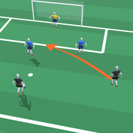
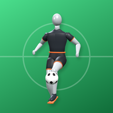
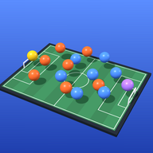
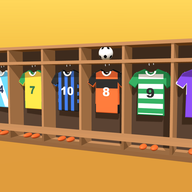

選手

場面を見て、どこに立つか・どうプレーするかを考えるクイズ。学年に合わせて出題します。

ひとりでできる練習。見本の動きを見ながら、タイマーでボールタッチ・ジンガ・ドリブル・キック。
コーチ

作戦ボード。フォーメーションの相性、ボールに合わせた動き、練習メニュー。

チーム名とメールを入れるだけ。選手のドリルの成績が、コーチ用リンクで見られます。
プライバシーについて ｜ お問い合わせ：junior.football.perspective@gmail.com